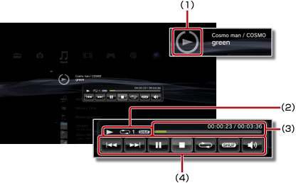

Musik > Verwenden des Mini-Kontrollmenüs
Verwenden des Mini-Kontrollmenüs
Über das Mini-Kontrollmenü können Sie während der Musikwiedergabe verschiedene Funktionen ausführen.
1. |
Drücken Sie während der Musikwiedergabe die PS-Taste. |
||||||||
|---|---|---|---|---|---|---|---|---|---|
2. |
Wählen Sie mit den Richtungstasten das Icon für die Musikinhalte aus, die unter 
|
Anmerkungen
- Das Icon für die gerade wiedergegebenen Musikinhalte wird direkt unter dem Icon
 (Musik) angezeigt.
(Musik) angezeigt. - Das Mini-Kontrollmenü lässt sich während der Musikwiedergabe mit der Taste
 ausblenden.
ausblenden.
Zurück

Wechseln zurück zum Anfang des aktuellen oder des vorherigen Titels.
Weiter
Wechseln zum Anfang des nächsten Titels.
Pause
Die Wiedergabe wird unterbrochen.
Stopp
Stoppen der Wiedergabe und Ausblenden des Mini-Kontrollmenüs.
Shuffle-Wiedergabe
Titel werden in willkürlicher Reihenfolge wiedergegeben.
Wiederholung
Titel werden wiederholt wiedergegeben. Mit der  -Taste können Sie einen von drei Wiederholmodi (im Folgenden aufgeführt) auswählen.
-Taste können Sie einen von drei Wiederholmodi (im Folgenden aufgeführt) auswählen.
 |
Ein Titel wird wiederholt wiedergegeben. |
|---|---|
|
Alle Titel werden wiederholt wiedergegeben. |
| Keine Anzeige | Die wiederholte Wiedergabe ist deaktiviert und alle Titel werden der Reihe nach wiedergegeben. |
Lautstärkeeinstellung
Stellen Sie den Lautstärkepegel von Titeln ein, die unter (Musik) wiedergegeben werden. Sie können aus neun Stufen auswählen.
Anmerkung
Der ausgegebene Ton ist möglicherweise verzerrt, wenn der Lautstärkepegel zu hoch eingestellt ist. Senken Sie den Pegel in diesem Fall.